Excel VBA を使って、アクティブセルの行と列を強調表示する方法について記載します。
1. アクティブセルの行と列を強調表示する
2. タイトル列、タイトル行を選択したときのアクションを追加する
3. タイトル列、タイトル行に独自色を付ける
4. 各色を設定シートで設定可能にする
5. ダブルクリックした項目で抽出を行うマクロ
6. "合計"欄の追加 と 行・列の挿入処理への対応
サンプルプログラム ダウンロード
参考
[概要] 表を使いやすくするマクロとして、アクティブセルの行と列を強調表示するマクロを作成します。
[環境]
[画面]
機能は１つです。
（機能１）選択中のセルに対応する行と列を強調表示（色を付ける）する
色を以下のようにします。
－ 選択中のセル： 黄色 (6)
－ 選択中のセル上下左右のセル： ライトイエロー (36)
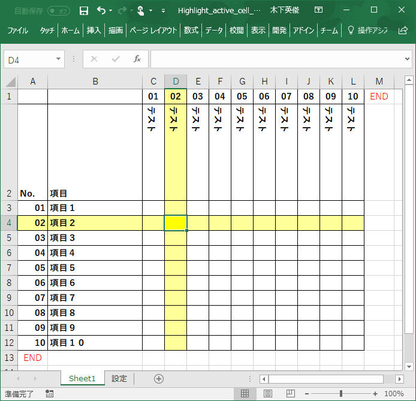
["アクティブセルの行と列を強調表示" する部分のVBA]
' 概要： アクティブセルの行と列を強調表示する
' 説明： アクティブセルの行と列を強調表示します。
' 引数： Target アクティブセル
' 著者： 木下英俊
' 履歴： 2017/12/08 新規作成
' 参考： 日経ソフトウェア 2018年1月号 － 実務ですぐに役立つ Excel VBA 第8回 表を使いやすくするマクロ
Private Sub Worksheet_SelectionChange(ByVal Target As Range)
Application.ScreenUpdating = False
Dim r As Long, c As Long
Dim er As Long, ec As Long
' ターゲットセルの位置を取得
r = Target.Row
c = Target.Column
' 最終行、最終列の位置を取得
er = Cells(Rows.Count, 1).End(xlUp).Row
ec = Cells(1, Columns.Count).End(xlToLeft).Column
' 全てのセルの背景をクリア
Cells.Interior.ColorIndex = xlNone
' 選択中のセルが１つなら以下の処理を実施
' 補足：列や行選択をした場合には以下の処理を実行しない
If Target.Cells.CountLarge = 1 Then
' 中央エリアのセルがアクティブだった場合の処理
If Not Intersect(Target, Range(Cells(3, 3), Cells(er - 1, ec - 1))) Is Nothing Then
' ターゲットセルの上下左右のセルの背景色をライトイエロー(36)にする
Range(Cells(r, 1), Cells(r, ec - 1)).Interior.ColorIndex = 36
Range(Cells(1, c), Cells(er - 1, c)).Interior.ColorIndex = 36
' ターゲットセルの背景色を黄色(6)にする
Cells(r, c).Interior.ColorIndex = 6
End If
End If
End Sub
[説明]
ー7行目： アクティブセル移動時のイベント処理です。（Worksheet_SelectionChange）
－21行目： 全てのセルの背景色（Interior）を無しにします。
ー25行目： 選択中のセルが１つなら以下の処理を実行
行や列の選択をしたときは何も処理しないようにこの処理を入れています。
－30行目： 選択セルの行の色を色コード36（薄黄色）にします。
－31行目： 選択セルの列の色を色コード36（薄黄色）にします。
－33行目： 選択セルの色を色コード6（黄色）にします。
[サンプルプログラム] ダウンロード
上部や左側のタイトルエリアが選択された場合、期待する動作は列や行のみの強調表示と考えます。
選択セル（ターゲットセル）としてタイトルエリアが選択された場合に、行または列のみが強調表示されるようにVBAを修正します。
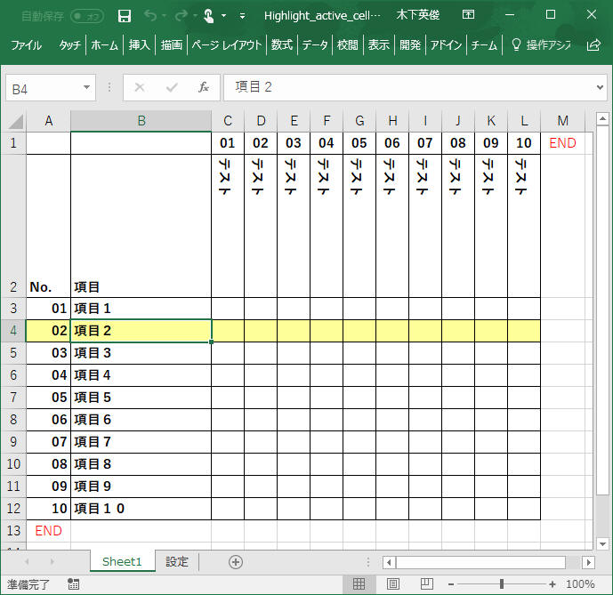
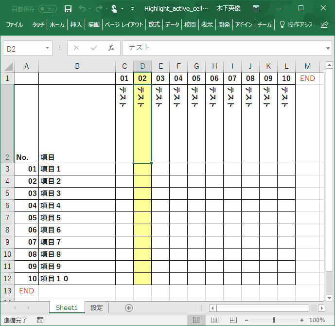
VBAマクロを以下のように修正します。
' 概要： アクティブセルの行と列を強調表示する
' 説明： アクティブセルの行と列を強調表示します。
' 引数： Target アクティブセル
' 著者： 木下英俊
' 履歴： 2017/12/08 新規作成
' 参考： 日経ソフトウェア 2018年1月号 － 実務ですぐに役立つ Excel VBA 第8回 表を使いやすくするマクロ
Private Sub Worksheet_SelectionChange(ByVal Target As Range)
Application.ScreenUpdating = False
Dim r As Long, c As Long
Dim er As Long, ec As Long
' ターゲットセルの位置を取得
r = Target.Row
c = Target.Column
' 最終行、最終列の位置を取得
er = Cells(Rows.Count, 1).End(xlUp).Row
ec = Cells(1, Columns.Count).End(xlToLeft).Column
' 全てのセルの背景をクリア
Cells.Interior.ColorIndex = xlNone
' 選択中のセルが１つなら以下の処理を実施
' 補足：列や行選択をした場合には以下の処理を実行しない
If Target.Cells.CountLarge = 1 Then
' 中央エリアのセルがアクティブだった場合の処理
If Not Intersect(Target, Range(Cells(3, 3), Cells(er - 1, ec - 1))) Is Nothing Then
' ターゲットセルの上下左右のセルの背景色をライトイエロー(36)にする
Range(Cells(r, 1), Cells(r, ec - 1)).Interior.ColorIndex = 36
Range(Cells(1, c), Cells(er - 1, c)).Interior.ColorIndex = 36
' ターゲットセルの背景色を黄色(6)にする
Cells(r, c).Interior.ColorIndex = 6
End If
' 右上エリアがアクティブだった場合の処理
If Not Intersect(Target, Range(Cells(1, 3), Cells(2, ec - 1))) Is Nothing Then
' ターゲットセルと同じ列のみのセル背景色をライトイエロー(36)にする
Range(Cells(1, c), Cells(er - 1, c)).Interior.ColorIndex = 36
End If
' 左下エリアがアクティブだった場合の処理
If Not Intersect(Target, Range(Cells(3, 1), Cells(er - 1, 2))) Is Nothing Then
'ターゲットセルと同じ行のみのセル背景色をライトイエロー(36)にする
Range(Cells(r, 1), Cells(r, ec - 1)).Interior.ColorIndex = 36
End If
End If
End Sub
[説明]
ー
38行目： 選択セルが右上エリアであるかを確認します。
－40行目： 選択セルの列を強調表示する。
－43行名：
選択セルが左下エリアであるかを確認します。
－45行目：
選択セルの行を強調表示する。
ここまでの処理でだいぶんツールとして十分に使えるレベルになってきました。
さて実際にツールとして使ってみると、タイトル部分などのセルが目立つように色を付けたくなってきます。
ただこのままの状態でタイトル部分に色を付けると、セルを選択したときのVBA処理ですべてクリアされてしまい、せっかく色を付けたタイトル部分が全てクリアされてしまいます。
タイトル部分に色を付けられるようにVBAを修正してみます。
以下のように色分けしてみます。
－ 左上エリア： うすい水色 (34)
ー 右上エリア：
水色 (37)
ー 左下エリア： 水色 (37)
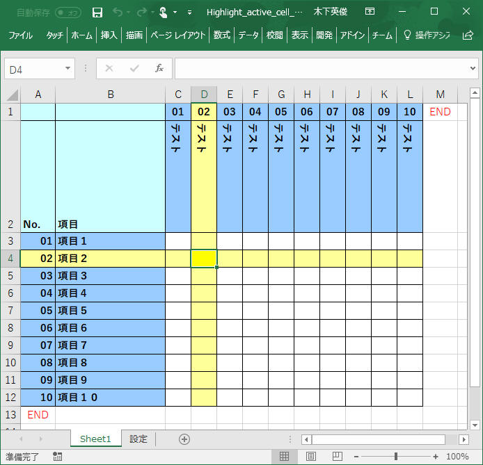
VBAマクロを以下のように修正します。
' 概要： アクティブセルの行と列を強調表示する
' 説明： アクティブセルの行と列を強調表示します。
' 引数： Target アクティブセル
' 著者： 木下英俊
' 履歴： 2017/12/08 新規作成
' 参考： 日経ソフトウェア 2018年1月号 － 実務ですぐに役立つ Excel VBA 第8回 表を使いやすくするマクロ
Private Sub Worksheet_SelectionChange(ByVal Target As Range)
Application.ScreenUpdating = False
Dim r As Long, c As Long
Dim er As Long, ec As Long
' ターゲットセルの位置を取得
r = Target.Row
c = Target.Column
' 最終行、最終列の位置を取得
er = Cells(Rows.Count, 1).End(xlUp).Row
ec = Cells(1, Columns.Count).End(xlToLeft).Column
' 全てのセルの背景をクリア
Range(Cells(3, 3), Cells(er - 1, ec - 1)).Interior.ColorIndex = xlNone
Range(Cells(1, 1), Cells(2, 2)).Interior.ColorIndex = 34
Range(Cells(1, 3), Cells(2, ec - 1)).Interior.ColorIndex = 37
Range(Cells(3, 1), Cells(er - 1, 2)).Interior.ColorIndex = 37
' 選択中のセルが１つなら以下の処理を実施
' 補足：列や行選択をした場合には以下の処理を実行しない
If Target.Cells.CountLarge = 1 Then
' 中央エリアのセルがアクティブだった場合の処理
If Not Intersect(Target, Range(Cells(3, 3), Cells(er - 1, ec - 1))) Is Nothing Then
Range(Cells(r, 1), Cells(r, ec - 1)).Interior.ColorIndex = 36
Range(Cells(1, c), Cells(er - 1, c)).Interior.ColorIndex = 36
Cells(r, c).Interior.ColorIndex = 6
End If
' 上側エリアがアクティブだった場合の処理
If Not Intersect(Target, Range(Cells(1, 3), Cells(2, ec - 1))) Is Nothing Then
Range(Cells(1, c), Cells(er - 1, c)).Interior.ColorIndex = 36
End If
' 左側エリアがアクティブだった場合の処理
If Not Intersect(Target, Range(Cells(3, 1), Cells(er - 1, 2))) Is Nothing Then
Range(Cells(r, 1), Cells(r, ec - 1)).Interior.ColorIndex = 36
End If
End If
End Sub
[説明]
ー 21行目： 中央エリアの背景色をクリアします。
ー 22行目： 左上エリアの背景色を薄水色(34)にします。
ー 23行目：
右上エリアの背景色を水色(37)にします。
ー 24行目： 左下エリアの背景色を水色(37)にします。
ここまでくるとシートで使用している色コードを任意の色に設定変更できるようにしたくなります。
「設定」シート上で任意炉の色へ変更できるようにしましょう。
また色コードだけの入力だと実際の色がわからないと不便です。
横に実サンプルとしてコードと色の対応を表示しておきましょう。
下図が作成するサンプルです。
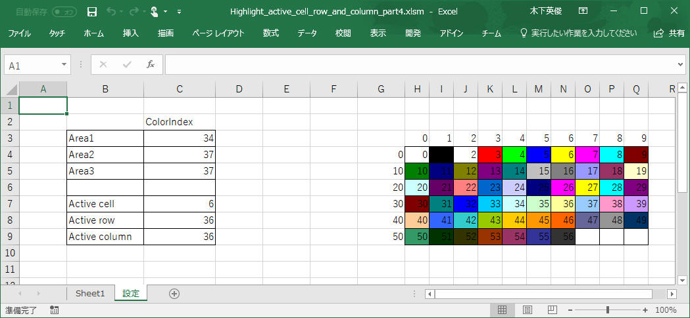
これまで作成してきた VBAマクロ を以下のように修正します。
' 概要： アクティブセルの行と列を強調表示する
' 説明： アクティブセルの行と列を強調表示します。
' 引数： Target アクティブセル
' 著者： 木下英俊
' 履歴： 2017/12/08 新規作成
' 参考： 日経ソフトウェア 2018年1月号 － 実務ですぐに役立つ Excel VBA 第8回 表を使いやすくするマクロ
Private Sub Worksheet_SelectionChange(ByVal Target As Range)
Application.ScreenUpdating = False
Dim r As Long, c As Long
Dim er As Long, ec As Long
' ターゲットセルの位置を取得
r = Target.Row
c = Target.Column
' 最終行、最終列の位置を取得
er = Cells(Rows.Count, 1).End(xlUp).Row
ec = Cells(1, Columns.Count).End(xlToLeft).Column
' 全てのセルの背景をクリア
Range(Cells(3, 3), Cells(er - 1, ec - 1)).Interior.ColorIndex = xlNone
Range(Cells(1, 1), Cells(2, 2)).Interior.ColorIndex = Sheets("設定").Range("c3").Value
Range(Cells(1, 3), Cells(2, ec - 1)).Interior.ColorIndex = Sheets("設定").Range("c4").Value
Range(Cells(3, 1), Cells(er - 1, 2)).Interior.ColorIndex = Sheets("設定").Range("c5").Value
' 選択中のセルが１つなら以下の処理を実施
' 補足：列や行選択をした場合には以下の処理を実行しない
If Target.Cells.CountLarge = 1 Then
' 中央エリアのセルがアクティブだった場合の処理
If Not Intersect(Target, Range(Cells(3, 3), Cells(er - 2, ec - 2))) Is Nothing Then
Range(Cells(r, 1), Cells(r, ec - 1)).Interior.ColorIndex = Sheets("設定").Range("c8").Value
Range(Cells(1, c), Cells(er - 1, c)).Interior.ColorIndex = Sheets("設定").Range("c9").Value
Cells(r, c).Interior.ColorIndex = Sheets("設定").Range("c7").Value
End If
' 上側エリアがアクティブだった場合の処理
If Not Intersect(Target, Range(Cells(1, 3), Cells(2, ec - 1))) Is Nothing Then
Range(Cells(1, c), Cells(er - 1, c)).Interior.ColorIndex = Sheets("設定").Range("c9").Value
End If
' 左側エリアがアクティブだった場合の処理
If Not Intersect(Target, Range(Cells(3, 1), Cells(er - 1, 2))) Is Nothing Then
Range(Cells(r, 1), Cells(r, ec - 1)).Interior.ColorIndex = Sheets("設定").Range("c8").Value
End If
End If
End Sub
"設定"シート側のVBAマクロです。
本処理は"設定"シート固有の処理なので、下図の「Sheet2(設定)」にVBAマクロを記載する必要があります。
シートが有効になったときに処理するために、イベント"Activate"をトリガーとする処理として実装します。
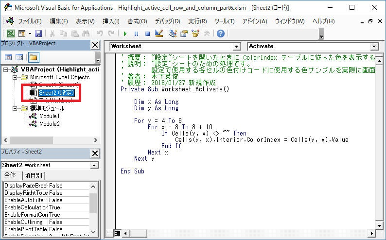
' 概要： "設定"シートを開いたときに ColorIndex テーブルに従った色を表示する
' 説明： "設定"シートのための処理です。
' 設定で使用する各セルの色付けコードに使用する色サンプルを実際に画面上で見られるようにすることを目的とする処理です。
' 著者： 木下英俊
' 履歴： 2018/01/27 新規作成
Private Sub Worksheet_Activate()
Dim x As Long
Dim y As Long
For y = 4 To 9
For x = 8 To 8 + 10
If Cells(y, x) <> "" Then
Cells(y, x).Interior.ColorIndex = Cells(y, x).Value
End If
Next x
Next y
End Sub
[サンプルプログラム] ダウンロード
行、列、のそれぞれタイトル部分(下図で青色の部分)をダブルクリックすると、対応する行・列の中に "○" または "■","END" が含まれているところのみをフィルターして表示する、というVBAを作成します。
（"END"を含めているのは、これまでに作成してきた選択セルの上下、左右の行・列に色を付けるマクロが正常動作しなくなるからです。）
下図で水色部分をダブルクリックするとフィルターを解除します。
こちらの図がフィルターをしていないデフォルト状態です。
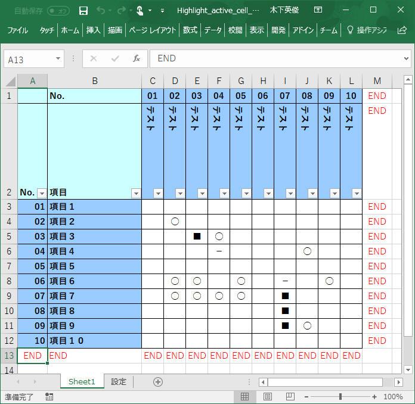
こちらが「03 テスト」部分をダブルクリックしたときの状態です。
AutoFilter により実現しています。
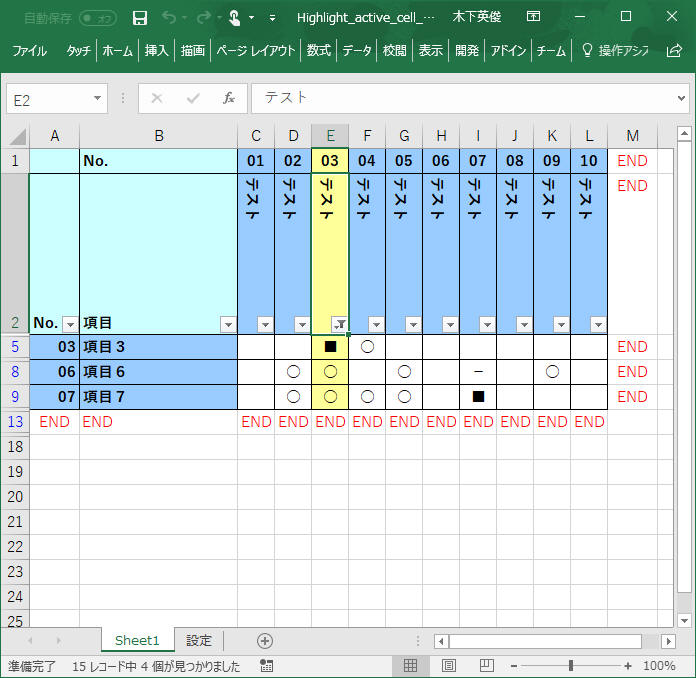
こちらの図が「07 項目7」をダブルクリックしたときの状態です。
こちらは Columns(i).Hidden プロパティで実現しています。
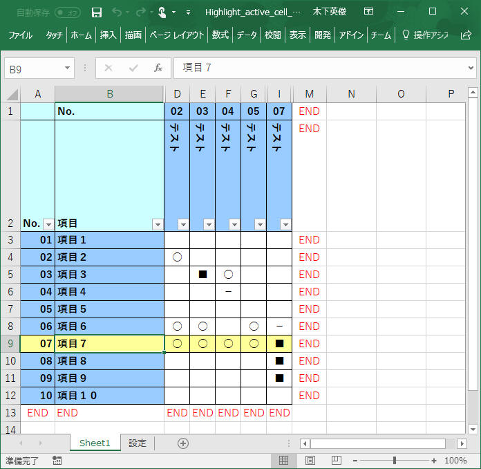
以下にVBAコードを示します。
[ダブルクリックした項目で抽出を行うマクロ]
Const EndMark As String = "END"
' 概要： ワークシート有効化時のイベント処理
' 説明： ワークシート有効化時のイベント処理を実装します。
' 引数： 無し
' 著者： 木下英俊
' 履歴： 2017/12/30 新規作成
Private Sub Worksheet_Activate()
lastRow = Cells(Rows.Count, 1).End(xlUp).Row
lastColumn = Cells(1, Columns.Count).End(xlToLeft).Column
End Sub
' 概要： マウス左ダブルクリック時のイベント処理
' 説明： マウス左ダブルクリック時のイベント処理を実装します。
' 引数： Target アクティブセル
' Cancel true： true にすると本来の左ダブルクリックの挙動をキャンセルします。
' false： default。本来の左ダブルクリックの挙動を実行します。
' 著者： 木下英俊
' 履歴： 2017/12/30 新規作成
Private Sub Worksheet_BeforeDoubleClick(ByVal Target As Range, Cancel As Boolean)
Application.ScreenUpdating = False
' 前処理
Dim r As Long, c As Long
Dim er As Long, ec As Long
' ターゲットセルの位置を取得
r = Target.Row
c = Target.Column
' 最終行、最終列の位置を取得
er = Cells(Rows.Count, 1).End(xlUp).Row
ec = Cells(1, Columns.Count).End(xlToLeft).Column
If Target.Row <= 2 Then
Cancel = True
' フィルター解除
If ActiveSheet.FilterMode = True Then
ActiveSheet.ShowAllData
End If
If Target.Column >= 3 And Target.Column < ec Then
Range("A1").AutoFilter field:=Target.Column, Criteria1:=Array("○", "■", EndMark), Operator:=xlFilterValues
End If
End If
If Target.Column <= 2 Then
Cancel = True
' フィルター解除
Columns.Hidden = False
If Target.Row >= 3 And Target.Column < er Then
For i = 3 To ec - 1
flag = False
If Cells(Target.Row, i).Value = "○" Then
flag = True
End If
If Cells(Target.Row, i).Value = "■" Then
flag = True
End If
If flag = False Then
Columns(i).Hidden = True
End If
Next i
End If
End If
' 画面更新
Call Worksheet_SelectionChange(Target)
Application.ScreenUpdating = True
End Sub
[サンプルプログラム] ダウンロード
ここまで修正すると、次は集計対象である"○"と"■"の合計数を表示したくなってきました。
これを追加してみます。
これ自体は対象セルに
"countif" の計算式を追加するだけできます。
しかしこの状態でこのエクセルマクロを使っていると、行や列を挿入するたびにそのセルに 合計 と END
を手動で追加する必要を生じてとても面倒になりました。これもVBAで自動的に挿入されるように修正します。
まずは対象のエクセルシートの行と列の末尾に「合計」を加えます。これはVBAではなくシートの修正です。
例えば３行目の合計欄には
「=COUNTIF(C3:L3,"○")+COUNTIF(C3:L3,"■")」 という式を記載することでできます。
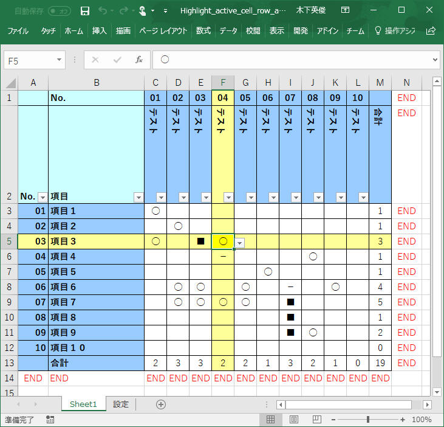
この状態で行や列を選択した状態で右クリックメニューから「挿入」をクリックした場合に、自動的にい「合計」と「END」の挿入も行われるようにします。
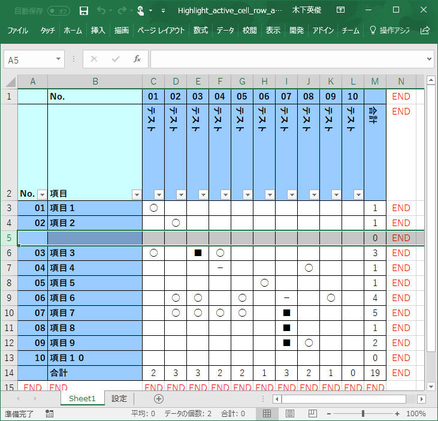
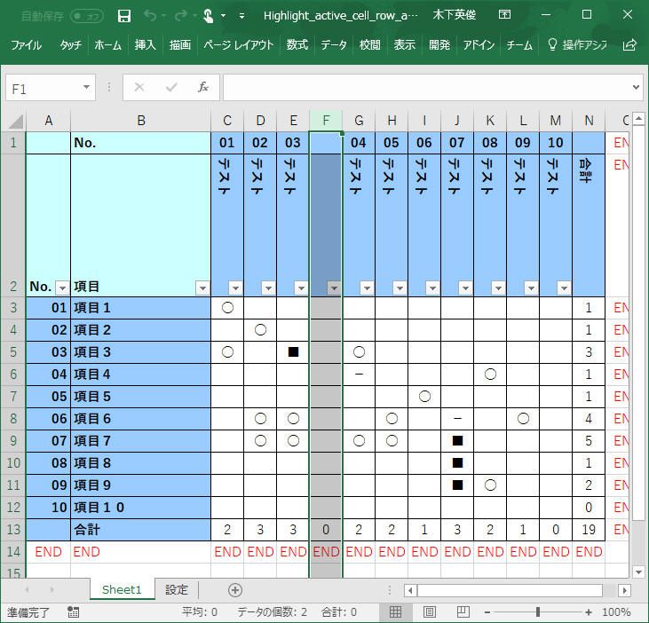
' 概要： ワークシート変化時のイベント処理
' 説明： ワークシート変化時のイベント処理を実装します。具体的には以下の処理を実装します。
' 行挿入：
' 行削除：
' 列挿入：
' 列削除：
' 引数： Target アクティブセル
' 著者： 木下英俊
' 履歴： 2017/12/30 新規作成
Private Sub Worksheet_Change(ByVal Target As Range)
Application.ScreenUpdating = False
Application.EnableEvents = False
' 前処理
debugString = ""
Dim r As Long, c As Long
Dim er As Long, ec As Long
' ターゲットセルの位置を取得
r = Target.Row
c = Target.Column
' 最終行、最終列の位置を取得
er = Cells(Rows.Count, 1).End(xlUp).Row
ec = Cells(1, Columns.Count).End(xlToLeft).Column
' 行の挿入・削除を確認
If er <> lastRow Then
If er < lastRow Then
' 行削除
debugString = "行削除"
Else
' 行挿入
debugString = "行挿入"
' 末尾に"END"を挿入
For i = 1 To er - lastRow
Cells(r + i - 1, ec).Value = "END"
Cells(r + i - 1, ec - 1).FormulaR1C1 = "=COUNTIF(RC[" & -ec + 4 & "]:RC[-1],""○"")+COUNTIF(RC[" & -ec + 4 & "]:RC[-1],""■"")"
Next i
End If
End If
' 列の挿入・削除を確認
If ec <> lastColumn Then
If ec < lastColumn Then
' 列削除
debugString = "列削除"
Else
' 列挿入
debugString = "列挿入"
' 末尾に"END"を挿入
For i = 1 To ec - lastColumn
Cells(er, c + i - 1).Value = "END"
Cells(er - 1, c + i - 1).FormulaR1C1 = "=COUNTIF(R[" & -er + 4 & "]C:R[-1]C,""○"")+COUNTIF(R[" & -er + 4 & "]C:R[-1]C,""■"")"
Next i
End If
End If
' 行数、列数、の情報を更新
lastRow = Cells(Rows.Count, 1).End(xlUp).Row
lastColumn = Cells(1, Columns.Count).End(xlToLeft).Column
Application.EnableEvents = True
Application.ScreenUpdating = True
End Sub
[サンプルプログラム] ダウンロード
その他いろいろと追加修正した最新版の 「Highlight_active_cell_row_and_column.xlsm」 を下記 ダウンロード から取得できます。
記載： 木下英俊
2020年07月08日 「サンプルプログラム ダウンロード」を追加
2018年01月27日 更新
2017年12月08日 新規作成